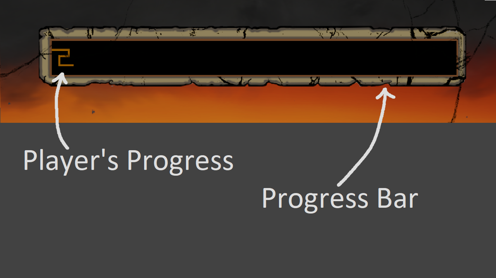

On A Roll
My Responsibilities
Boulder Mechanics
Player Movement
Lightning Strike
Obstacles
UI coding
Audio coding
Tools
Unity3D
SourceTree
Visual Studio
Git
Game Overview
On A Roll is a 3D side-scrolling platformer where you play as the Greek legend Sisyphus. You must defy the curse of the gods by rolling a massive boulder to the top of a mountain while avoiding obstacles.
Experience Summary
On A Roll is a term project I worked on during my time at VFS. I worked as the programmer along side a level designer, artist, project manager, and UI designer. I held a strong point of communication with the project manager, so we could funnel all our completed tasks through him and be able to work efficiently.
This project has taught me the importance of constant and consistent communication during the development life-cycle, so everyone knows what's been done or has to be done. I've also learned some pipelines and best practices when it comes to implementing art and animation into the game and integrating code with it. This project has proven to be quite hard to code as this is my first game engine project as well as this being a physics driven game, requiring a lot of math.
I was a part of this project from pre-production all the way until final/release.
Boulder Mechanics
The boulder mechanics consited of three actions, push, throw, and catch. All of these mechanics were physics driven, so I had to take the initiative and learn some kinematic and projectile physics equations in order for the boulder to feel realistic and like you're actually throwing it. While developing this system I ran into many, many issues with Unity and it's collision detection system and had to learn how to use it properly. This being my first time dealing with physics and collisions, I had to write and rewrite my scripts multiple times until I finally learned how to do it properly. However through this I learned that was an extremely inefficient way of learning the system and instead I should've broken it down into smaller segments, then once I understood the system I can combine them together.
Player Movement
Player movement was already included in the base project, however we had a very unique movement system where Sisyphus auto runs. I had to learn how to create a unique movement script, so I looked over and studied the existing movement script and took out what code was useful to me and added my own to create the auto run.
Our player movement also has another unique aspect where you have a variable jump height depending on how long you hold the jump button. The way I solved this problem was for Sisyphus to always jump for the maximum height, however once the jump button is let go the gravity is increased, thus slowing the player down quicker and falling faster.
Lightning Strike
The lightning strike went through many design iterations as each time it didn't feel the way we wanted to, so to keep up with the pace of changes was quite the challenge. We went from striking at random intervals, to striking after a trigger but can strike anywhere on the screen, to finally striking in a close radius around the player. With so many changes being made I knew rewriting the whole system everytime would be extremely inefficient, so I modularized my scripts so we can swap small scripts in place of other ones without having to rewrite everything. Then once we finally felt that it felt good I then simplified the scripts into one which made it was easier to debug, rather than searching through ten different small scripts.
Obstacles
We wanted to add some small obstacles that the player had to jump over in order to not die, as well as incentivise jumping and throwing the boulder more. So, I added a simple Spike Trap system where if the player collided with it you'd die. However, it didn't feel quite fair and we decided to add a health system.
The health system we added was quite simple as the player only has two points of health which healed over time. When Sisyphus collides with the spike he now gets delt one damage instead. There a simple check to see if the player has max health or not and if not, it begins to increment the time elapsed until it is higher or equal to the required regeneration time.
UI

The UI was very simple to implement as we didn't have many custom elements, as well as Unity has a fantasic system built-in for UI navigation. The two custom made UI elements were the Progress Meter and well as the Strength Bar. The Progress Bar simply takes the player's traveled distance and compares it with the total distance to determine the fill.
The Strength Bar is slightly more complicated as there is an inital bar that goes down revealing the chaser, then the chaser bar follows to show that you've used up that strength. The inital bar is directly taken from how much strength you want to use when you hold down the throw button over time. Then the chaser quickly follows after the button is released through a lerp.
Audio
I used the built-in Unity audio system for this game, making the implementation of audio extremely simple. All I had to do was add the script and the sound I wanted then sometimes trigger the audio to play through one line of code. I also created scriptable objects from the mixer settings so you could adjust volume of individual mixer sliders.